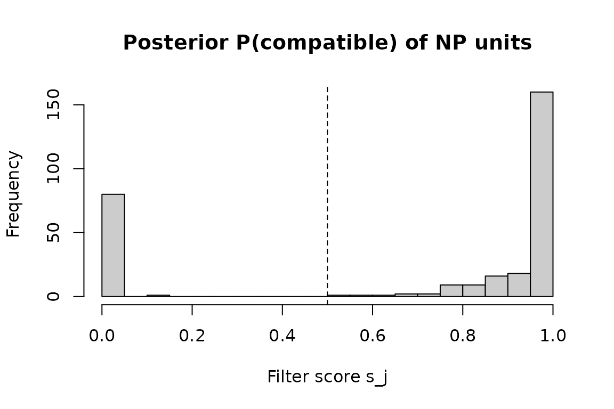
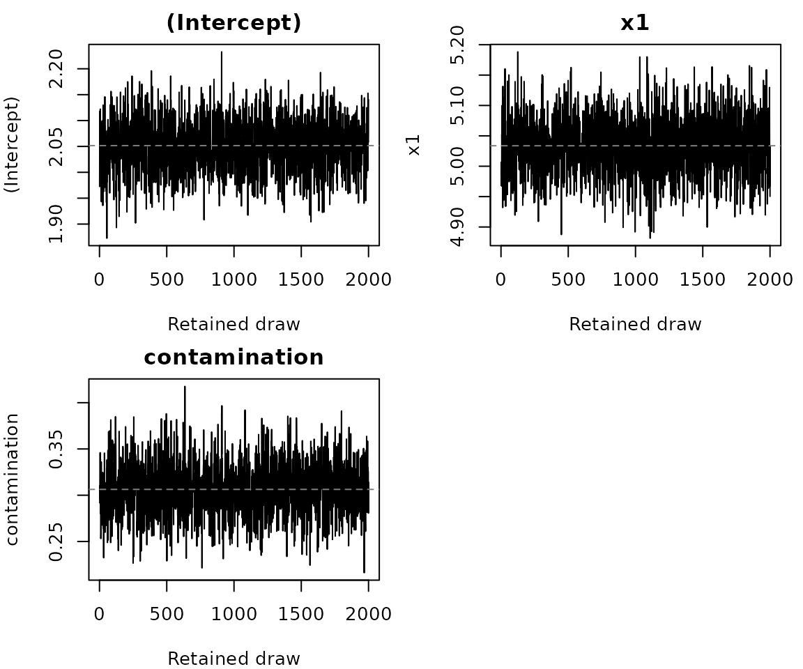

The problem
A probability sample (P) is drawn with a known design and is trusted to represent the target population, but it is often small. A non-probability sample (NP) — web panels, administrative extracts, opt-in surveys — is cheaper and larger, but some of its units may follow a different outcome–covariate relationship than the target population, or lie outside its covariate support. We call such units contaminated.
Two simple strategies are common:
- Probability-only: ignore the NP sample. Unbiased, but imprecise.
- Naive pooling: treat every NP unit as if it came from the target population. Precise, but biased whenever contamination is present — and more data does not reduce that bias.
Contamination-aware integration sits between the two. Each NP unit receives a latent indicator ( = compatible with the target model). Compatible units are pooled with the P sample; contaminated units are absorbed by a separate mixture component. The posterior probability — the filter score — tells you how much each NP unit is trusted, and the posterior of estimates the contamination fraction. Because only compatible units inform the target regression, the estimator is close to probability-only when the NP sample is heavily contaminated and close to the pooled estimator when it is clean.
Model
For P units, (Gaussian, logistic or Poisson regression). For NP units,
Three variants are available through model:
| model | contaminating outcome density | covariate term |
|---|---|---|
"M0" |
covariate-free (, Bernoulli(), Poisson()) | none |
"Mjoint" (default) |
as M0 | , on continuous covariates |
"M1" |
rival regression with its own coefficients | none |
The Mjoint covariate term compares each NP unit’s
continuous covariates with the P-sample distribution: units at large
Mahalanobis distance are more plausible under the inflated contaminating
density and are down-weighted.
Estimation uses a data-augmentation Gibbs sampler; the target block
is updated with conjugate Gibbs steps (Gaussian), Pólya–Gamma
augmentation (logistic) or a Laplace-proposal Metropolis–Hastings step
(Poisson). See ?mixture_fit for details.
A first example
simulate_mixture_data() generates a P sample and an NP
sample with a known fraction of contaminated units.
d <- simulate_mixture_data("gaussian", n_prob = 150, n_nonprob = 300,
contamination = 0.3, beta = c(2, 5),
x_shift = 1.5, seed = 2026)
head(d$nonprob)
#> y x1 contaminated
#> 1 9.3893016 1.4481788 0
#> 2 1.3537165 -0.1846723 0
#> 3 -11.2648644 -2.5128208 0
#> 4 -0.4734667 0.6404102 1
#> 5 4.0276943 0.6013861 0
#> 6 -8.2719326 2.7376824 1
table(d$nonprob$contaminated)
#>
#> 0 1
#> 210 90Before fitting, check how well the NP sample overlaps the P sample in the covariate space:
overlap_diagnostics(d$prob["x1"], d$nonprob["x1"])
#> Covariate overlap diagnostics (P vs NP)
#> Overlap coefficient (OC): 0.846
#> Exceedance fraction (EF, >q99): 0.060
#> Propensity-score AUC: 0.627Fit the contamination-aware model and the two reference estimators:
fit <- mixture_fit(y ~ x1, prob_data = d$prob, nonprob_data = d$nonprob,
family = "gaussian", n_iter = 3000, burnin = 1000, seed = 1)
prob_only <- baseline_fit(y ~ x1, d$prob, n_iter = 2000, burnin = 1000, seed = 1)
pooled <- baseline_fit(y ~ x1, rbind(d$prob, d$nonprob[names(d$prob)]),
n_iter = 2000, burnin = 1000, seed = 1)
rbind(truth = c(2, 5), prob_only = coef(prob_only), naive_pooled = coef(pooled),
mixture = coef(fit))
#> (Intercept) x1
#> truth 2.0000000 5.000000
#> prob_only 2.1060952 5.051342
#> naive_pooled 0.1689265 1.312062
#> mixture 2.0515891 5.033711The naive pooled estimate is pulled away from the truth by the contaminated units; the mixture estimate is close to the truth and, using the compatible NP units, more precise than the probability-only estimate:
Interpreting the output
summary(fit)
#> Bayesian contamination-mixture fit (bayesSampleMix)
#> Call: mixture_fit(formula = y ~ x1, prob_data = d$prob, nonprob_data = d$nonprob,
#> family = "gaussian", n_iter = 3000, burnin = 1000, seed = 1)
#> Family: Gaussian (identity link)
#> Model: Mjoint (contaminating density + covariate leverage term)
#> Leverage covariates: x1 (inflation c = 4)
#> Samples: n_P = 150, n_NP = 300
#> MCMC: 3000 iterations, burn-in 1000, thin 1 -> 2000 draws
#>
#> Target-model coefficients (posterior; 95% credible intervals):
#> mean sd 2.5% 50% 97.5% ess mcse
#> (Intercept) 2.05 0.0489 1.95 2.05 2.15 1650 0.00120
#> x1 5.03 0.0464 4.94 5.03 5.13 1760 0.00111
#>
#> Error variance:
#> mean sd 2.5% 50% 97.5% ess mcse
#> sigma2 0.83 0.0659 0.711 0.825 0.968 1120 0.00197
#>
#> Contamination:
#> mean sd 2.5% 50% 97.5% ess mcse
#> contamination 0.306 0.0284 0.253 0.307 0.364 1350 0.000772
#> contamination_realized 0.305 0.0109 0.287 0.303 0.327 1340 0.000297
#>
#> Filter scores of NP units (s_j = posterior P(compatible)):
#> expected compatible units: 208.4 of 300; units with s_j < 0.5: 81; mean entropy: 0.106-
Target-model coefficients are posterior summaries
of
from the retained draws: posterior mean and standard deviation, an
equal-tailed credible interval, effective sample size (
ess) and Monte Carlo standard error (mcse). - Contamination reports (the probability that a new NP unit is contaminated) and the realised fraction of the observed NP units allocated to the contaminating component.
- Filter scores are unit-level posterior probabilities of compatibility:
s <- filter_scores(fit)
tapply(s, d$nonprob$contaminated, summary)
#> $`0`
#> Min. 1st Qu. Median Mean 3rd Qu. Max.
#> 0.5390 0.9432 0.9915 0.9522 0.9983 1.0000
#>
#> $`1`
#> Min. 1st Qu. Median Mean 3rd Qu. Max.
#> 0.0000 0.0000 0.0000 0.0941 0.0000 0.9940
filter_auc(1 - d$nonprob$contaminated, s) # known labels: simulation only
#> [1] 0.9642328
plot(fit, type = "scores")
Always inspect the chains:
plot(fit, type = "trace")
Where next
-
vignette("gaussian-model"): the three model variants and severe contamination. -
vignette("logistic-model"): binary outcomes with Pólya–Gamma augmentation. -
vignette("poisson-model"): count outcomes.